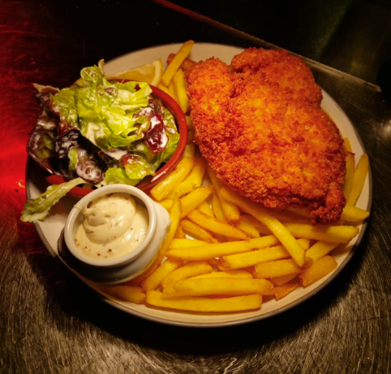
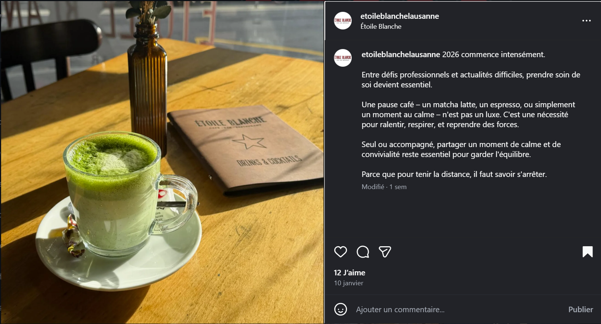

Introduction : La Vision 2026
Objectif du Playbook
Ce document définit un cadre de qualité unifié pour tous les contenus de l'Étoile Blanche, du post Instagram soigné à la story quotidienne du plat du jour. L'objectif n'est pas d'ajouter de la complexité, mais de transformer des habitudes simples en une image de marque cohérente et professionnelle.
Stratégie Globale 2026 : Positionnement & Horizons
La stratégie pour l'Étoile Blanche vise à réinventer l'interaction entre cet établissement emblématique et son public lausannois en misant sur l'authenticité et l'humain. L'objectif central est de positionner le lieu comme la référence à Lausanne pour la cuisine de terroir (notamment le cordon bleu) et la convivialité (afterwork et musique live).
Consolidation et Visibilité
Stabiliser l'image de marque suite au changement de propriétaires et dynamiser les périodes spécifiques.
Conserver une direction artistique proche de l'actuelle pour ne pas brusquer la clientèle fidèle, tout en y apportant une touche de modernité.
Répartition du contenu : 50% restauration (cordon bleu, événements culinaires) et 50% ambiance (afterwork et musique live).
- Calendrier éditorial strict : 3 publications/semaine (Instagram, Facebook, TikTok)
- Focus Cordon Bleu le mardi : publicités ciblées (budget 50 CHF/mois) pour booster les soirées creuses
- Promotion afterwork jeudi + musique live pour fidéliser les actifs du quartier
Création de nouveaux menus saisonniers et de supports de table spécifiques pour le cordon bleu.
Expansion et Engagement
Élargir la base de clientèle et affiner l'expérience numérique.
Intégration progressive des étudiants dans la communication, une fois que les axes afterwork et soirées seront bien ancrés.
Collaboration avec des micro-influenceurs lausannois (1 000 à 10 000 abonnés) pour tester le cordon bleu et produire du contenu authentique.
Refonte du site web pour mieux séparer l'agenda, les événements et les actualités, tout en corrigeant l'ergonomie mobile.
Production de contenus "coulisses" (ateliers cuisine, vidéos d'équipe) pour renforcer le lien émotionnel avec la communauté.
Innovation et Fidélisation
Faire de l'Étoile Blanche un lieu de vie total, fluide et moderne.
Mise en place de QR codes présentables (acrylique ou gravure bois) permettant de commander et de payer directement depuis le téléphone.
Consolider la vision de "l'institution lausannoise pour les Lausannois" en cultivant les valeurs d'accessibilité, de spontanéité et de convivialité.
Utilisation des retours clients et des données d'engagement pour ajuster les offres saisonnières et les événements spéciaux (live cooking).
Supports Physiques & Marketing de Table
Design des Menus : Analyse Chromatique
Clarté et efficacité. Fond neutre pour privilégier la lisibilité. Hiérarchie de l'information optimisée pour une lecture rapide.
Esthétique rouge et noire pour une ambiance plus intimiste. Contraste élevé pour créer une expérience visuelle distinctive.
Menus Hebdomadaires : Variantes Red & White

Menu de la semaine avec identité rouge signature. Design audacieux et moderne.

Menu de la semaine avec fond clair. Élégance et lisibilité maximale.
Marketing de Table : Stand-ups Cordon Bleu
Conversion sur Table
Les stand-ups visuels placés stratégiquement sur les tables sont un outil puissant pour booster les ventes de l'offre Cordon Bleu.
- Placement stratégique : Sur chaque table, visible immédiatement à l'arrivée du client.
- Cohérence visuelle : Reprendre les codes couleurs et typographies du menu.
- Message clair : Offre + Prix + Visuel appétissant = Décision rapide.
- Renouvellement : Changer régulièrement pour éviter "l'effet papier peint".
💡 Astuce : Placer le stand-up avant que le client consulte le menu augmente de 40% les chances de conversion.
Guide de Photographie Culinaire "In-House"
L'objectif est d'obtenir des photos uniformes et convenables sans complexifier le service. Voici les 3 règles fondamentales à respecter systématiquement.
La Lumière
Privilégier une lumière directe pour créer des contrastes esthétiques et bien éclairer le plat. Éviter absolument les lumières jaunes de cuisine qui déforment les couleurs.
✓ À faire : Lumière naturelle de fenêtre ou spots blancs directs
✗ À éviter : Lumières tamisées, néons jaunes, contre-jour
Le Cadrage
Utiliser un cadrage serré, pris juste au-dessus du niveau de l'assiette (angle 30-45°) pour rendre le plat plus alléchant. Cela permet d'ignorer les détails inutiles du décor.
✓ À faire : Remplir le cadre avec l'assiette, angle léger
✗ À éviter : Photo de très haut (à plat), trop d'espace vide
La Zone "Passe"
La zone du passe-plat est idéale : bonne lumière, pas d'aménagement requis et gêne minimale pour le service. C'est le spot stratégique à privilégier systématiquement.
✓ Pourquoi : Lumière cuisine + naturelle, assiettes fraîches, workflow fluide
✗ Alternative : Ne photographier ailleurs qu'en cas d'impossibilité absolue
Exemples Visuels : Appliquer les 3 Règles


Workflow Optimisé Service
Assiette prête au passe
Photo rapide (5 sec)
Service client
Post/Story ultérieurement
Important : Ne jamais ralentir le service pour la photo. Si le passe est trop chargé, attendre le prochain plat.
Analyse Comparative : Audit Visuel
Comprendre pourquoi certaines pratiques nuisent à l'appétence est essentiel pour progresser. Voici une analyse concrète des erreurs courantes et des solutions à adopter.
✗ À Éviter
Problèmes identifiés :
- Cadrage trop large : Le plat se perd dans le décor, perte d'impact visuel
- Lumière jaune/terne : Les couleurs ne sont pas fidèles, aspect peu appétissant
- Angle plat (vue de dessus) : Pas de relief ni de profondeur, image "morte"
- Arrière-plan distrayant : L'œil se disperse au lieu de se concentrer sur le plat
✓ À Reproduire
Éléments réussis :
- Focus produit : L'assiette occupe 70-80% du cadre, impact immédiat
- Lumière maîtrisée : Contrastes nets, couleurs fidèles et vibrantes
- Angle bas (30-45°) : Donne du volume et de la texture au plat
- Arrière-plan neutre : Rien ne distrait de l'essentiel
Bibliothèque d'Assets : Ressources Techniques
Cette section centralise tous les éléments de marque essentiels pour garantir la cohérence visuelle sur tous les supports.
Logos
Principal
logo-principal.svg
Inverse (blanc)
logo-blanc.svg
📁 Emplacement : assets/docs/logos/
Usage : Toujours utiliser le format SVG pour une qualité optimale. Version PNG disponible pour réseaux sociaux.
Typographies
QUICK MEAL JNL
Titres & Headlines
Bold, Uppercase, Letter-spacing élevé
TT Hazelnut
Corps de texte & Sous-titres
Regular (400), Bold (700), ExtraBold (800)
📁 Emplacement : assets/fonts/
Palette de Couleurs
Étoile Red
#b22222
Titres, CTA, accents
Étoile Dark
#1a1a1a
Navigation, footer
Étoile White
#ffffff
Fond principal
Étoile Grey
#f8f8f8
Sections alternées
Stratégie Réseaux Sociaux : Guide Opérationnel Complet
Vision Stratégique et Objectifs
L'objectif central est d'imposer L'Étoile Blanche comme la référence lausannoise pour la cuisine de terroir (notamment le Cordon bleu) et la convivialité (Afterwork et Live music).
Visibilité Locale
Cibler les Lausannois dans un rayon de 5 km. Utiliser la géolocalisation systématique et les hashtags locaux.
Engagement
Créer une communauté fidèle via les Stories et une interaction rapide (réponse < 24h).
Conversion
Transformer l'intérêt en ligne en réservations concrètes. Lien bio vers module de réservation.
Écosystème Numérique : Les 3 Plateformes
Canal Principal
Rôle : Esthétique et image de marque
Action clé : Géolocaliser TOUJOURS "L'Étoile Blanche - Lausanne"
Relais Informatif
Rôle : Cibler une clientèle plus familiale
Action clé : Synchronisation via Meta Business Suite
Notoriété & Viralité
Rôle : Coulisses et humour pour toucher les 18-35 ans
Action clé : Vertical 9:16, durée 15-30 secondes
🛠️ Outils Recommandés
Planification et publication Instagram + Facebook. Gratuit et indispensable.
Création de visuels professionnels. Templates prêts à l'emploi.
Gestion des avis et optimisation SEO local.
Ligne Éditoriale et Règles d'Or
Ton de Communication
Principe : "Écrire comme on parle" — Direct, sans jargon, accessible.
📅 Régularité
3 bons posts/semaine valent mieux qu'une présence irrégulière. Qualité > Quantité.
👥 Humain
Montrer l'équipe et l'ambiance. Demander autorisation pour photos avec visages (droit à l'image).
💬 Interactivité
Répondre aux commentaires en < 24h. Engagement = algorithme favorable.
📍 Géolocalisation
Toujours taguer "L'Étoile Blanche - Lausanne" pour la découvrabilité locale.
🎬 Vidéo
Au moins 1 Reel/TikTok par semaine. La vidéo a 10x plus de portée que les photos.
🔗 Bio
Lien en bio vers réservation ou menu. Mettre à jour si offres spéciales.
Calendrier Hebdomadaire Type
Charge de travail estimée : ~2 heures/semaine (photos + création + réponses)
Publication du menu avec variantes Red/White. Crédibilité culinaire.
Créer un rendez-vous hebdomadaire. Post boosté (50 CHF/mois optionnel).
Générer du trafic en soirée. Ambiance conviviale.
Image vivante et authentique. Portée virale.
Anticiper la semaine. Moment cocooning.
Note : Les Stories quotidiennes (plats du jour) sont en supplément, prises au passe-plat (5 sec/photo).
Gestion de la Réputation et Engagement
Règle d'or : Répondre à 100% des avis (Google, TripAdvisor, Facebook) en moins de 48h.
⭐⭐⭐⭐⭐ Avis Positifs
Objectif : Remercier et renforcer l'image de marque.
Exemple de réponse :
"Merci beaucoup [Prénom] ! Quel plaisir de lire votre retour. L'équipe est ravie que vous ayez apprécié l'ambiance et le Cordon bleu. À très bientôt pour un nouvel afterwork ! 🍽️"
⭐⭐⭐ Avis Neutres
Objectif : Rester humble et ouvert à l'amélioration.
Exemple de réponse :
"Merci [Prénom] pour votre retour constructif. Nous prenons note de vos remarques et travaillons constamment à améliorer nos services. Au plaisir de vous revoir bientôt ! 😊"
⭐⭐ Avis Négatifs
Objectif : Désamorcer le conflit, rester courtois et inviter à une discussion privée.
Exemple de réponse :
"Bonjour [Prénom], nous sommes sincèrement désolés que votre expérience n'ait pas été à la hauteur. Nous prenons vos remarques très au sérieux. Pourriez-vous nous contacter en privé pour en discuter ? [Email/Tél]"
⚠️ Ne jamais : Se justifier publiquement, être défensif ou ignorer.
Leviers de Croissance
👥 Micro-Influenceurs
Profil cible : Lausannois avec 1'000 à 10'000 abonnés (food, lifestyle, local).
Stratégie : Offrir un repas complet (2 personnes) contre post + story + avis. Authenticité maximale.
ROI attendu : 500-2'000 impressions/collaboration. Coût : ~60 CHF (repas).
💰 Publicité Ciblée
Budget optionnel : 50 CHF/mois pour booster spécifiquement le post du Cordon bleu (mardi).
Ciblage : Lausanne + 5 km, 25-55 ans, intérêts : restaurants, cuisine, afterwork.
ROI attendu : 2'000-4'000 portée/mois. Conversion ~2-5%.
🔗 Conversion Directe
Lien en biographie : Toujours pointer vers module de réservation OU menu PDF à jour.
Call-to-Action : Utiliser "Réservez maintenant" / "Voir le menu" / "Contactez-nous".
Impact : +30% de conversions avec lien optimisé.
Captions Types : Modèles de Légendes
Exemples de légendes prêtes à l'emploi pour chaque type de publication. À personnaliser selon le contexte.
Exemple 1 :
"🍽️ La semaine commence en beauté ! Découvrez notre menu Red & White avec des classiques revisités et des nouveautés qui vont vous régaler. Quel plat vous tente le plus ? 😋
📍 L'Étoile Blanche - Lausanne
📞 Réservations : [lien en bio]"
Exemple 2 :
"C'est lundi et on démarre fort ! 💪 Notre menu de la semaine est prêt : fraîcheur, fait maison et saveurs au rendez-vous. Passez nous voir !"
Exemple 1 :
"🔥 MARDI = CORDON BLEU ! 🔥
Notre spécialité maison vous attend : croustillant à l'extérieur, fondant à l'intérieur. Servi avec frites maison et salade fraîche.
26.- seulement 🤩
📍 L'Étoile Blanche
👉 Réservez votre table maintenant !"
Exemple 2 (Storytelling) :
"Le secret d'un bon Cordon bleu ? Un poulet de qualité, un fromage qui file, une panure croustillante et... beaucoup d'amour ❤️ Tous les mardis chez nous. Venez goûter la différence !"
Exemple 1 :
"C'est jeudi, vous avez mérité une pause ! 🍻
Rejoignez-nous pour l'afterwork : ambiance décontractée, musique live et cocktails signatures. Parce que la semaine, c'est aussi fait pour se retrouver.
📍 Dès 17h | L'Étoile Blanche"
Exemple 2 :
"JEUDI AFTERWORK 🎶✨
Musique, convivialité et bonne humeur garantie. On vous attend nombreux pour décompresser ensemble !"
Exemple 1 (Coulisses) :
"POV : C'est samedi midi en cuisine 🔥😅
[Vidéo du service rush]
Voilà ce qui se passe en coulisses pour que vos assiettes arrivent parfaites ! L'équipe donne tout 💪"
Exemple 2 (Humour) :
"Quand le chef demande 'Qui veut goûter la nouvelle recette' 👀
[Vidéo équipe qui se précipite]
Ambiance familiale garantie chez nous ❤️"
Exemple 1 :
"Dimanche matin parfait = café, pâtisserie fraîche et un coin douillet ☕📖
Prenez le temps de ralentir chez nous. Parce que le dimanche, c'est sacré.
📍 Ouvert dès 9h | L'Étoile Blanche"
Exemple 2 :
"Le calme avant la tempête de la semaine 😌 Profitez d'un moment cocooning dans notre espace détente. Brunch, café, lecture... Dimanche comme on les aime."
💡 Conseils pour les Captions
Stratégie Hashtags : Guide Officiel
Utiliser entre 5 et 10 hashtags par post. Mix de hashtags locaux, thématiques et spécifiques.
🏙️ Hashtags Locaux (Priorité 1)
À inclure systématiquement pour la visibilité locale.
🍽️ Hashtags Thématiques (Priorité 2)
Selon le type de contenu publié.
Pour le Cordon Bleu :
Pour l'Afterwork :
Pour le Lifestyle :
⭐ Hashtags Marque (Priorité 3)
Créer et utiliser des hashtags spécifiques à l'Étoile Blanche.
💡 Encourager les clients à utiliser ces hashtags pour du contenu UGC (User Generated Content)
📝 Exemples de Combinaisons par Type de Post
Post Cordon Bleu (Mardi) :
#Lausanne #LausanneFoodie #CordonBleu #CordonBleuMaison #CuisineSuisse #FaitMaison #LausanneRestaurant #CuisineDuTerroir #VaudGourmand #EtoileBlancheLausanne #MangezLocal
Post Afterwork (Jeudi) :
#AfterworkLausanne #Lausanne #HappyHour #MusiqueViveLausanne #Convivialite #LausanneLife #AperoTime #SuisseRomande #ChezEtoileBlanche #Afterwork
Post Lifestyle (Dimanche) :
#LausanneCafe #CoffeeLover #BrunchTime #Lausanne #WeekendVibes #MomentDouceur #CafeGourmand #LausanneLife #EtoileBlanche #SuisseRomande
⚠️ Règles d'Utilisation des Hashtags
Exemples de Contenus Réussis